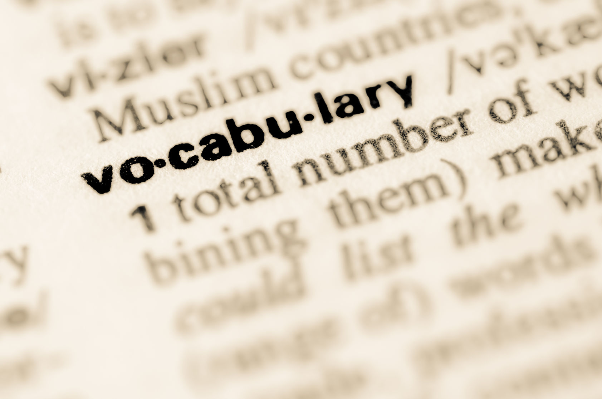

Home
This is my Vocab Page!

- Sprites: It's a graphic object that is able to move it to the top or behind the background.
- Script: It is a a set of instruction where it tells the sprite or the stage what to do.
- Iteration: is where you repeat a procedure multiple times.
- Stage: The place in which all of the sprites move.
- Costumes: Are the different appearances that a spirit would have.
- Sounds: The noises that are created in the program.
- Pseudocode: A simple way of writing program codes.
- Pair program: Where two people take turns on who is leading the program on a single computer.
- Integrated Development Environment(IDE): It is where the developer can do anything for the program such as making it, running it, and debugging in one application.
- See inside: Is a button on scratch in where you are able to see other people's work.
- Boolean Expression: It is a statement in which it tells if it's true or false mostly are in the if structure.
- Execute: It is to run a program or just an instruction.
- Bug: Where a part of a program that makes it to make an error or a different outcome.
- Debugging: It is a process in which you figure out why the code doesn’t work and try to fix it.
- Central Processing Unit(CPU, or core): It is a part inside the computer that runs the instructions one at a time.